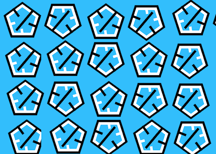

About Us
Wir sind ein junges Software-Unternehmen mittlerer Größe (210 permanente Mitarbeiter) mit Sitz in Attnang-Puchheim in Österreich.
Unser Angebot richtet sich an Interessenten, die an Astronomie, Physik oder schlicht beeindruckenden Erfahrungen auf PC-, Fernseh- oder VR-Bildschirmen
interessiert sind. Sie sind ebenfalls für Bildungseinrichtungen geeignet, da wir ein hohes Maß an wissenschaftlicher Genauigkeit anstreben.
Unsere Simulationen - gegenwärtig befinden sich 2 im vollständig entwickeltem Zustand, die "Neutron Star"- und "Black Hole"- Simulationen, bieten die
Erfahrung dieser astronomischen Objekte aus der First-Person-Perspektive eines Astronauten.
Unsere eingetragenen Marken
Wortbildmarke: Das RevolutionXPerience-Logo
Das Logo der RevolutionXPerience GmbH besteht aus dem "RevolutionXPerience"-Namen auf einem schwarzen, scheinbar schmelzendem Block vor cyanfarbenem Hintergrund (siehe "RevolutionXPerience-Cyan), und ist eine Marke der RevolutionXPerience GmbH. Seine fließende, schwarze Form symbolisiert die fremde Welt des Alls, der RevolutionsXPerience-Schriftzug unser Verlangen, diese faszinierende Welt erlebbar zu machen. Das RevolutinsXPerience-Logo kennzeichnet unsere Produkte, und wird in unserem Marketing, Webauftritt und den User-Interfaces unserer Simulationen verwendet.
Mustermarke: Das RevolutionXPerience-Pattern

Das Muster aus wiederholten Fünfecken mit nach innen und außen gerichteten Pfeilern (siehe Bild) und ihren fortlaufenden, charakteristischen Drehungen ist eine Marke
der RevolutionXPerience GmbH.
Das 'RevolutionXPerience-Pattern' wird als stilistisches Mittel in den User-Interfaces unserer Produkte sowie in unserem Webauftritt verwendet.
Farbmarke: RevolutionXPerience-Cyan
Der besondere Blauton unseres Unternehmens ('RevolutionXPerience-Cyan', Farbcode #32BEFC) ist ebenfalls markenrechtlich geschützt.
'RevolutionXPerience-Cyan' wird als stilistisches Mittel in den User-Interfaces unserer Produkte sowie in unserem Webauftritt verwendet.
Nizza-Klassen
Unsere Marken sind der Nizza-Klasse 9 (Software) zugeordnet.